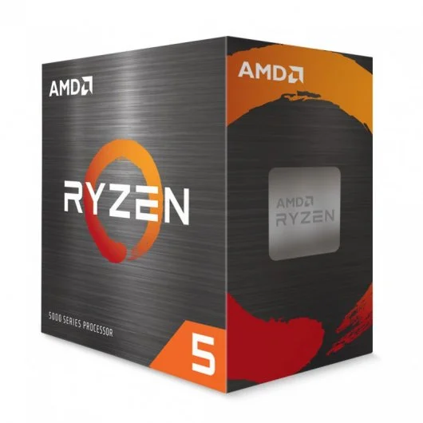

100 - Intel i5 12400F
92 - AMD R5 5600X

80 - AMD R5 5600

70 - AMD R5 5500
65 - Intel i3 13100F
57 - Intel i3 12100
Los procesadores valorados en esta página están calificadas de 1-100 siendo 100 el rendimiento bruto máximo del procesador en trabajo multinúcleo, vamos a dejar de lado la potencia mononúcleo ya que la carga real en los procesadores recae siempre sobre varios núcleos a la vez. Los resultados de clasificación están obtenidos de una mezla de pruebas sintéticas que estresan al máximo los procesadores como cinebech R20 o R23. Tambien se puede apreciar que estan en tarjetas de diferentes colores según el fabricante. Al estar hablando de gama baja entendemos procesadores con precios hasta 250€.